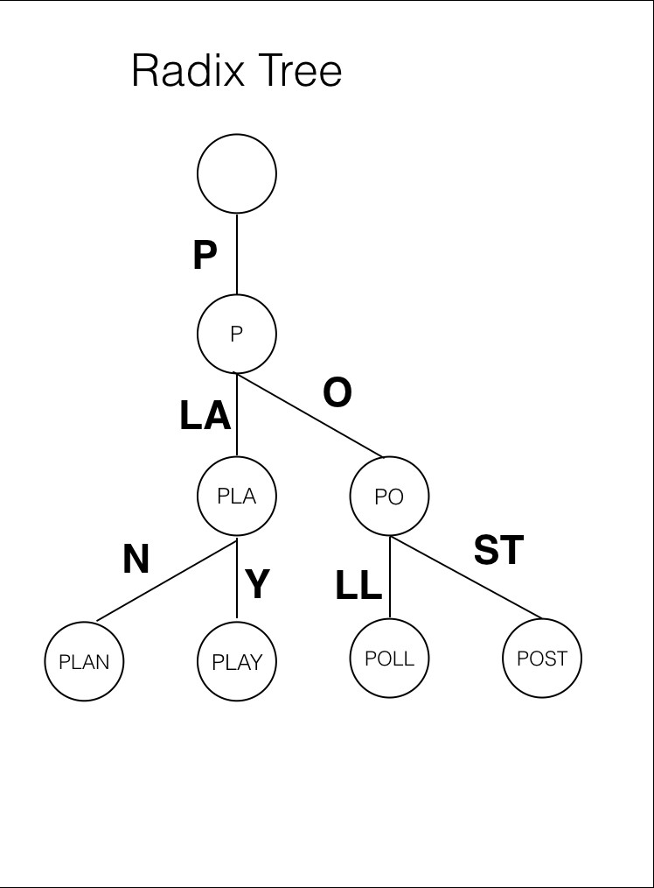

Product Searches and Ranking
1.Radix Tree
Radix trees can be used to quickly find products by matching word
prefixes, making searches faster and using less memory than regular trees.
This helps show relevant results faster, improving user experience and
saving system resources.

Code:
#include <iostream>
#include <unordered_map>
#include <vector>
#include <string>
#include <tuple>
class RadixNode {
public:
std::unordered_map<char, RadixNode*> nodes;
bool is_leaf;
std::string prefix;
RadixNode(const std::string& prefix = "", bool is_leaf = false)
: prefix(prefix), is_leaf(is_leaf) {}
std::tuple<std::string, std::string, std::string> match(const std::string& word) {
size_t x = 0;
for (size_t i = 0; i < std::min(prefix.size(), word.size()); ++i) {
if (prefix[i] != word[i]) break;
++x;
}
return { prefix.substr(0, x), prefix.substr(x), word.substr(x) };
}
void insert_many(const std::vector<std::string>& words) {
for (const auto& word : words) {
insert(word);
}
}
void insert(const std::string& word) {
if (prefix == word && !is_leaf) {
is_leaf = true;
return;
}
if (nodes.find(word[0]) == nodes.end()) {
nodes[word[0]] = new RadixNode(word, true);
} else {
auto incoming_node = nodes[word[0]];
std::string matching_string, remaining_prefix, remaining_word;
std::tie(matching_string, remaining_prefix, remaining_word) = incoming_node->match(word);
if (remaining_prefix.empty()) {
incoming_node->insert(remaining_word);
} else {
incoming_node->prefix = remaining_prefix;
auto aux_node = nodes[matching_string[0]];
nodes[matching_string[0]] = new RadixNode(matching_string, false);
nodes[matching_string[0]]->nodes[remaining_prefix[0]] = aux_node;
if (remaining_word.empty()) {
nodes[matching_string[0]]->is_leaf = true;
} else {
nodes[matching_string[0]]->insert(remaining_word);
}
}
}
}
bool find(const std::string& word) {
auto it = nodes.find(word[0]);
if (it == nodes.end()) return false;
auto incoming_node = it->second;
std::string matching_string, remaining_prefix, remaining_word;
std::tie(matching_string, remaining_prefix, remaining_word) = incoming_node->match(word);
if (!remaining_prefix.empty()) return false;
if (remaining_word.empty()) return incoming_node->is_leaf;
return incoming_node->find(remaining_word);
}
bool delete_word(const std::string& word) {
auto it = nodes.find(word[0]);
if (it == nodes.end()) return false;
auto incoming_node = it->second;
std::string matching_string, remaining_prefix, remaining_word;
std::tie(matching_string, remaining_prefix, remaining_word) = incoming_node->match(word);
if (!remaining_prefix.empty()) return false;
if (!remaining_word.empty()) return incoming_node->delete_word(remaining_word);
if (!incoming_node->is_leaf) return false;
if (incoming_node->nodes.empty()) {
delete nodes[word[0]];
nodes.erase(word[0]);
if (nodes.size() == 1 && !is_leaf) {
auto merging_node = nodes.begin()->second;
is_leaf = merging_node->is_leaf;
prefix += merging_node->prefix;
nodes = merging_node->nodes;
delete merging_node;
}
} else if (incoming_node->nodes.size() > 1) {
incoming_node->is_leaf = false;
} else {
auto merging_node = incoming_node->nodes.begin()->second;
incoming_node->is_leaf = merging_node->is_leaf;
incoming_node->prefix += merging_node->prefix;
incoming_node->nodes = merging_node->nodes;
delete merging_node;
}
return true;
}
};
void test_trie() {
std::vector<std::string> words = { "banana", "bananas", "bandana", "band", "apple", "all", "beast" };
RadixNode root;
root.insert_many(words);
for (const auto& word : words) {
if (!root.find(word)) {
std::cout << "Test failed: word not found - " << word << std::endl;
return;
}
}
if (root.find("bandanas") || root.find("apps")) {
std::cout << "Test failed: unexpected word found." << std::endl;
return;
}
root.delete_word("all");
if (root.find("all")) {
std::cout << "Test failed: word found after deletion - all" << std::endl;
return;
}
root.delete_word("banana");
if (root.find("banana")) {
std::cout << "Test failed: word found after deletion - banana" << std::endl;
return;
}
if (!root.find("bananas")) {
std::cout << "Test failed: word not found - bananas" << std::endl;
return;
}
std::cout << "All tests passed." << std::endl;
}
int main() {
test_trie();
return 0;
}
Time Complexity
| Operation |
Complexity |
| Insertion |
O(k) |
| Deletion |
O(k) |
| Search |
O(k) |
Space Complexity
| Operation |
Complexity |
| Insertion |
O(n * k) |
| Deletion |
O(1) |
| Search |
O(1) |
Note
- k is the length of the keys
- n is the number of keys
2.AVL trees
AVL trees can be used in product ranking by keeping products sorted
based on their relevance or popularity scores. This allows quick
retrieval of the most relevant items for display while ensuring balanced
search performance.

Code:
#include <iostream>
#include <string>
using namespace std;
// Define a struct for product details
struct Product {
string name;
string category;
double price;
Product(string n, string c, double p) : name(n), category(c), price(p) {}
};
// AVL tree node for product management
class Node {
public:
Product data;
Node* left;
Node* right;
int height;
Node(Product d) : data(d), left(nullptr), right(nullptr), height(1) {}
};
int height(Node* N) {
if (N == nullptr) return 0;
return N->height;
}
int max(int a, int b) {
return (a > b) ? a : b;
}
Node* rightRotate(Node* y) {
Node* x = y->left;
Node* T2 = x->right;
x->right = y;
y->left = T2;
y->height = max(height(y->left), height(y->right)) + 1;
x->height = max(height(x->left), height(x->right)) + 1;
return x;
}
Node* leftRotate(Node* x) {
Node* y = x->right;
Node* T2 = y->left;
y->left = x;
x->right = T2;
x->height = max(height(x->left), height(x->right)) + 1;
y->height = max(height(y->left), height(y->right)) + 1;
return y;
}
int getBalance(Node* N) {
if (N == nullptr) return 0;
return height(N->left) - height(N->right);
}
Node* insert(Node* node, Product data) {
if (node == nullptr) return new Node(data);
if (data.name < node->data.name)
node->left = insert(node->left, data);
else if (data.name > node->data.name)
node->right = insert(node->right, data);
else
return node;
node->height = 1 + max(height(node->left), height(node->right));
int balance = getBalance(node);
if (balance > 1 && data.name < node->left->data.name)
return rightRotate(node);
if (balance < -1 && data.name > node->right->data.name)
return leftRotate(node);
if (balance > 1 && data.name > node->left->data.name) {
node->left = leftRotate(node->left);
return rightRotate(node);
}
if (balance < -1 && data.name < node->right->data.name) {
node->right = rightRotate(node->right);
return leftRotate(node);
}
return node;
}
void inorder(Node* root) {
if (root != nullptr) {
inorder(root->left);
cout << "Name: " << root->data.name << ", Category: " << root->data.category
<< ", Price: $" << root->data.price << endl;
inorder(root->right);
}
}
int main() {
Node* root = nullptr;
root = insert(root, Product("Laptop", "Electronics", 999.99));
root = insert(root, Product("Headphones", "Electronics", 199.99));
root = insert(root, Product("Coffee Maker", "Home Appliances", 49.99));
root = insert(root, Product("Sneakers", "Footwear", 79.99));
root = insert(root, Product("Smartphone", "Electronics", 699.99));
cout << "Products in sorted order:" << endl;
inorder(root);
return 0;
}
Time Complexity
| Function |
Amortized |
Worst case |
| Search |
O(log n) |
O(log n) |
| Insert |
O(log n) |
O(log n) |
| Delete |
O(log n) |
O(log n) |